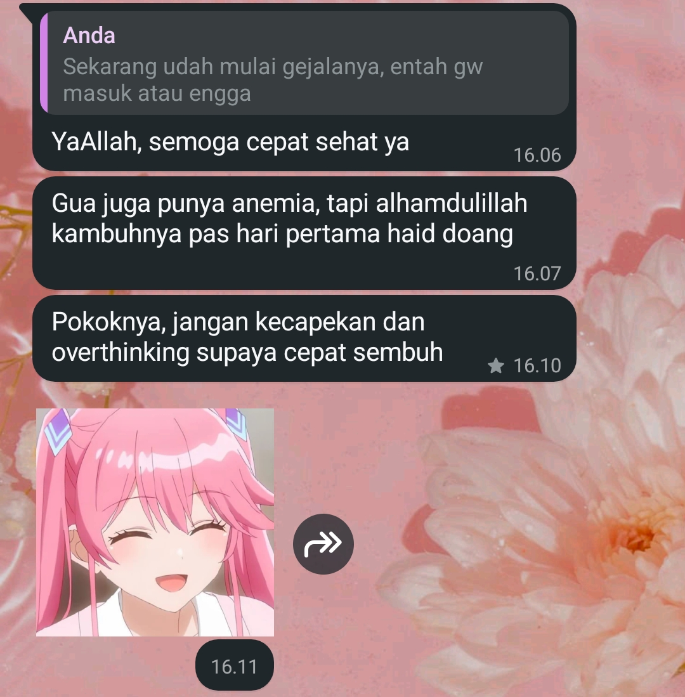

Hai haii, Syala tau ndaa? kalau Syala tuh "aset" yang paling Nanat lindungii, Nanat sayangii, dan yang PALLINGGG NANATT CINTAIIII.
Nanat mencintai Syala bukan cuman dari wajah Syala ajaa, tapi dari sifatnya jugaa (Syalaaa tuh orangnya BAIKKK BANGETTTT)
Nanat awal mula suka sama Syala tuh bukan pas kita cosplayy, tapi pas Nanat sakit terus Syala pedulii sama Nanatt

Tanpa chat itu, mungkin kita gak akan sedekat ini...
Nanat berterima kasih banget karena Syala udah ada di hidup Nanatt, Nanat jadi lebih fokus memperbaiki diri, lebih rajin sholat, dan jadi suka baca novel.
Selain Nanat yang berkembang, Syala juga harus berkembang yaaa!! Syala punya bakat yang baguss bangett di senii, jadi perdalam lagi yaa ilmu seni nyaa.
Nanat akan terus dukung Syala meraih mimpinyaa, dan bahkan Nanat pernah berfikir gimana ya kalau nanti kita menikah?? itu hanya pemikiran anak SMA,
tapi.. semoga kejadian yaa, aamiin. Syala itu tumbuh dengan sedikitnya peran ayah, dan yang bisa Nanat bantu pun sedikit, dan gak bisa mengobati luka lama.
Nanat akan selalu ada di sisi Syala saat Syala butuh, Nanat gak mau ninggalin Syala. Pastinya berat banget kehidupan masa kecil sampai remaja tanpa peran ayah,
tetep semangat yaa sayangg!! Nanat akan terus berusaha buat Syalaa, jadi Syala jangan menyerah yaa!! -Nanat
.jpg)
.jpg)